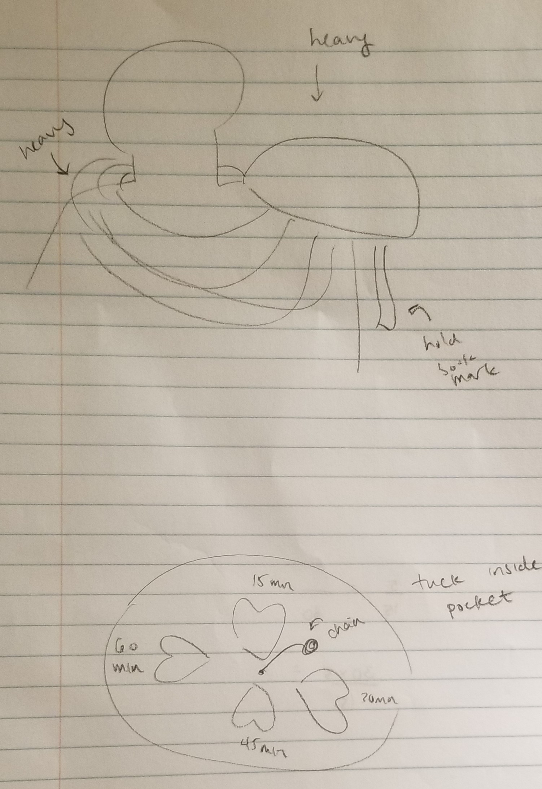
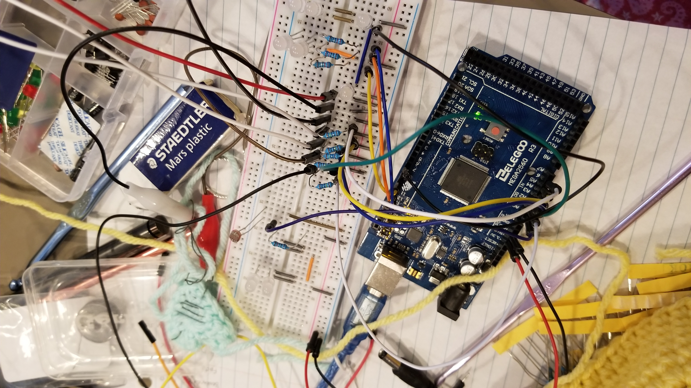
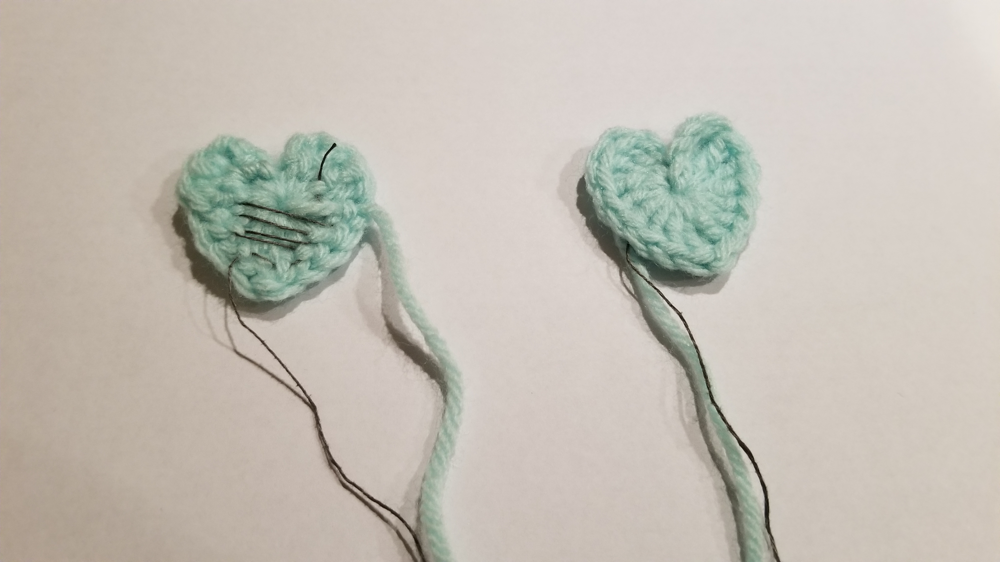
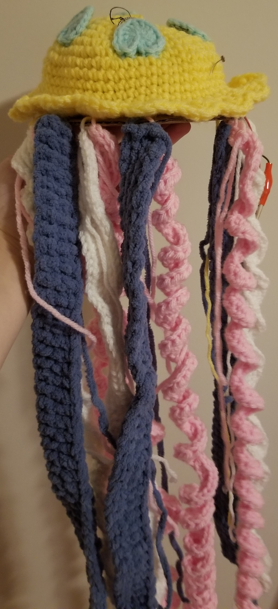
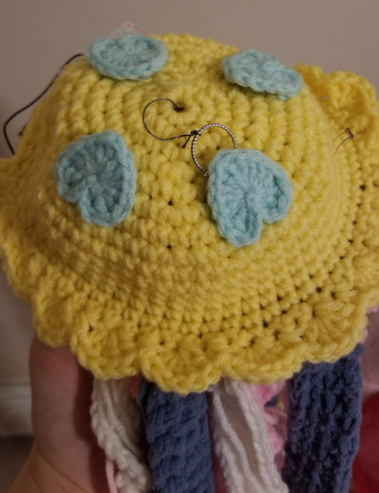
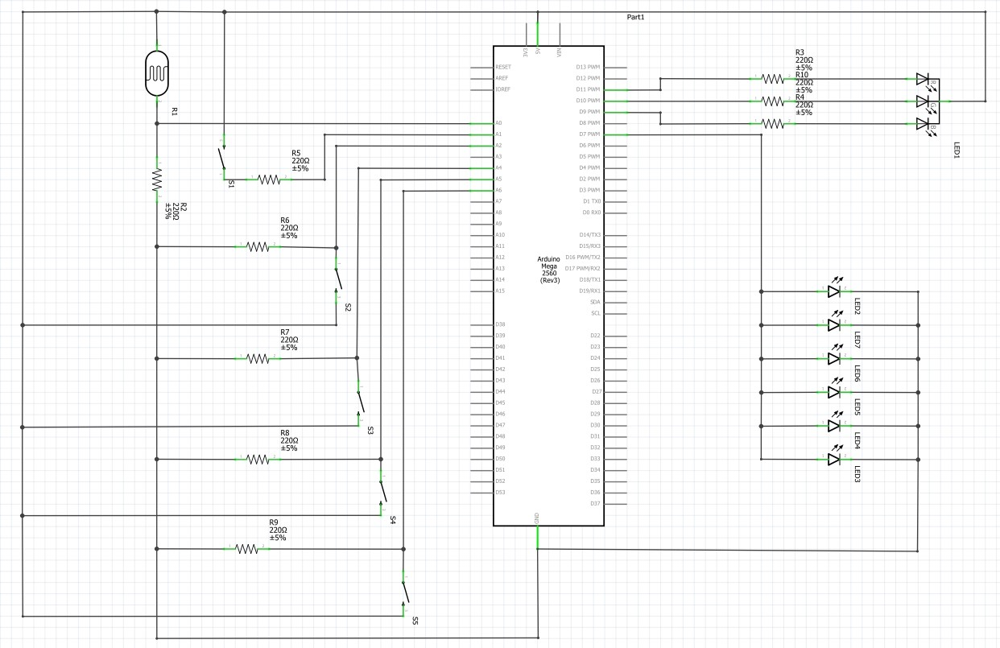
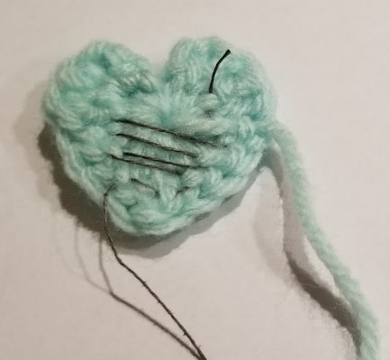
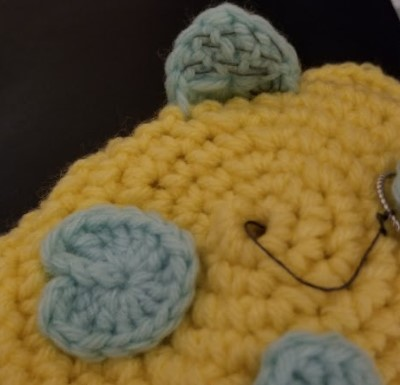

This is a final project created for CPSC 599.88 (Tangible & Physical HCI). Students were tasked with creating a wearable TUI that is inspired by hygge, the Scandinavian concept of coziness and its associated connotations. In response to this, I reflected on my own definition of hygge and created a jellyfish shaped reading light intended to be used when reading before going to bed. This design of this light takes into account the fact that hygge moments cannot last forever, and gently reminds the user that their reading time is limited.
The jelly light is a mixture of a timed reading light and a scarf. Users are able to set the amount of time they would like to read, and the jelly light will glow with white light, decreasing the intensity proportionally to the amount of time remaining. When the light turns off, users know that their reading time is up.
The jelly light consists of an Arduino Mega, its associated circuitry, and a crochet embodiment. All electrical components are encapsulated within the crochet embodiment, and several electrical components were augmented with conductive thread to further integrate the electrical and crochet elements.
Several images taken throughout the design and construction process.
A rough sketch depicting the jelly light concept.
One of the early iterations of my circuitry.
The front and backside of a heart sensor, taken before sewing it onto the jellyfish bell.
Several images of the finished product.
The finished jelly light.
A closeup of the jelly light's bell.
The jelly light, wearing its sleep mask.
The jelly light allows the user to select the amount of time they would like to read for. Once the user uses gives the bookmark to the jellyfish, it will glow with an intensity proportional to the amount of time the user has left to read. At this point, users can either put the jelly light on or leave it on their desk. After this time has elapsed, the light shuts off. At this point, it is time for bed. The user can place an eye mask on the jelly light, and it will cycle through various RGB colours for a set amount of time as the user sleeps. After this time has elapsed, it is time for the user to wake up. The jelly light turns off the RGB light and slowly increases the intensity of a white light, in hopes of waking the user up.
The following is a diagram of my circuit. Note that the switches were wired in part using conductive thread in order to integrate with the embodiment.
The embodiment of the jelly light is primarily crochet. I designed this pattern to be large enough to house an Arduino Mega, while being cozy enough to wear.
If you're curious as to what my embodiment process was, read on! If you'd like to recreate it, note that all terminology is in US terms.
Note: Use a looser gauge here, as the light from the LEDs will need to shine through the bell.
Make as many or as few of these as necessary.
Sew several inches of conductive yarn into the bottoms of the four hearts, as shown in the image below.
Sew each heart onto the bell, being careful to leave the conductive thread exposed, as shown in the image below.
In creating this project, the following references were used.
The code in this tutorial modified for use in my code, where it was applied to fade the white LEDs on or off.
Found here.The circuit schematic in this tutorial was used to wire the RGB LEDs in my own circuitry. Additionally, their showRGB() and showSpectrum() functions were repurpose and slightly modified for use in my code.
Found here.The circuit schematic in this tutorial was used to wire the photocell in my own circuitry. Additionally, their code for reading the value of the photocell was incorporated into my code.
Found here.I used the pattern for a small heart to create the hearts on the jelly light.
Found here.I took inspiration from Kobakant's tilt sensor to design the heart sensors on the jelly light.
Found here.